Informs users while preserving the current page state.
Basic usage
Dialog pops up a dialog box, and it’s quite customizable.
Set model-value / v-model attribute with a
Boolean, and Dialog shows when it is true. The
Dialog has two parts: body and footer, and the
latter requires a slot named footer. The
optional title attribute (empty by default) is for defining
a title. Finally, this example demonstrates how
before-close is used.
A dialog opens from the server,
update_el_dialog(visible = TRUE);
input$<id> is whether it is open.
before_close, a JS() function, may hold the
close back.
ui <- el_page(
el_button("open", "Click to open the Dialog", plain = TRUE),
el_dialog(
"tips",
title = "Tips",
width = "500px",
content = tags$span("This is a message"),
before_close = JS(
"function(done) { if (confirm('Are you sure to close this dialog?')) done(); }"
),
footer = tagList(
el_button("cancel", "Cancel"),
el_button("confirm", "Confirm", type = "primary")
)
)
)
server <- function(input, output, session) {
observeEvent(input$open, update_el_dialog(id = "tips", visible = TRUE))
observeEvent(
c(input$cancel, input$confirm),
update_el_dialog(id = "tips", visible = FALSE),
ignoreInit = TRUE
)
}
shinyApp(ui, server)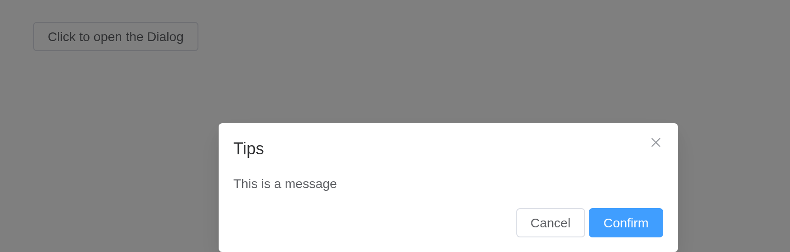
Tip
before-closeonly works when user clicks the close icon or the backdrop. If you have buttons that close the Dialog in thefooternamed slot, you can add what you would do withbefore-closein the buttons’ click event handler.
Customized Content
The content of Dialog can be anything, even a table or a form. This example shows how to use Element Plus Table and Form with Dialog.
ui <- el_page(
el_button("open", "Open a Form nested Dialog", plain = TRUE),
el_dialog(
"shipping",
title = "Shipping address",
width = "500px",
content = tagList(
el_input(
"name",
label = "Promotion name",
label_position = "left",
label_width = "140px"
),
el_select(
"zone",
choices = c("Zone No.1" = "shanghai", "Zone No.2" = "beijing"),
placeholder = "Please select a zone",
label = "Zones",
label_position = "left",
label_width = "140px"
)
),
footer = tagList(
el_button("cancel", "Cancel"),
el_button("confirm", "Confirm", type = "primary")
)
)
)
server <- function(input, output, session) {
observeEvent(input$open, update_el_dialog(id = "shipping", visible = TRUE))
}
shinyApp(ui, server)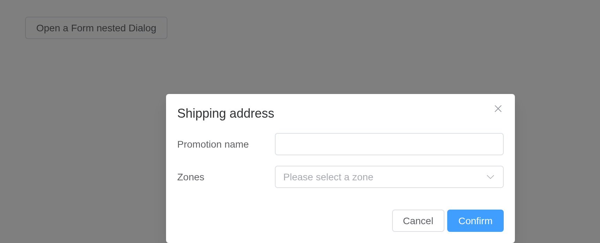
Customized Header
The header slot can be used to customize the area where
the title is displayed. In order to maintain accessibility, use the
title attribute in addition to using this slot, or use the
titleId slot property to specify which element should be
read out as the dialog title.
The title takes markup: a header of your own.
ui <- el_page(
el_button("open", "Open Dialog with customized header", plain = TRUE),
el_dialog(
"custom",
show_close = FALSE,
width = "500px",
title = tags$div(
style = "display: flex; justify-content: space-between; align-items: center",
tags$h4("This is a custom header!"),
el_button("close", "Close", type = "danger", icon = "CircleCloseFilled")
),
content = "This is dialog content."
)
)
server <- function(input, output, session) {
observeEvent(input$open, update_el_dialog(id = "custom", visible = TRUE))
observeEvent(input$close, update_el_dialog(id = "custom", visible = FALSE))
}
shinyApp(ui, server)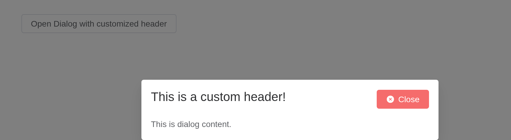
Nested Dialog
If a Dialog is nested in another Dialog, append-to-body
is required.
Normally we do not recommend using nested Dialog. If you need
multiple Dialogs rendered on the page, you can simply flat them so that
they’re siblings to each other. If you must nest a Dialog inside another
Dialog, set append-to-body of the nested Dialog to true,
and it will append to body instead of its parent node, so both Dialogs
can be correctly rendered.
ui <- el_page(
el_button("open", "Open the outer Dialog", plain = TRUE),
el_dialog(
"outer",
title = "Outer Dialog",
width = "800px",
content = tagList(
tags$span("This is the outer Dialog"),
el_dialog(
"inner",
title = "Inner Dialog",
width = "500px",
append_to_body = TRUE,
content = "This is the inner Dialog"
)
),
footer = el_button("inner_open", "Open the inner Dialog", type = "primary")
)
)
server <- function(input, output, session) {
observeEvent(input$open, update_el_dialog(id = "outer", visible = TRUE))
observeEvent(input$inner_open, update_el_dialog(id = "inner", visible = TRUE))
}
shinyApp(ui, server)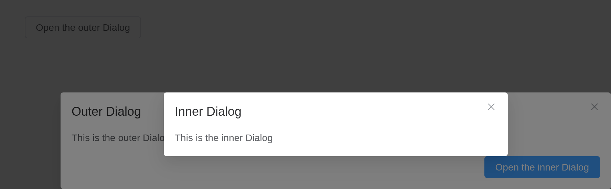
Centered content
Dialog’s content can be centered.
Setting center to true will center dialog’s
header and footer horizontally. center only affects
Dialog’s header and footer. The body of Dialog can be anything, so
sometimes it may not look good when centered. You need to write some CSS
if you wish to center the body as well.
ui <- el_page(
el_button("open", "Click to open the Dialog", plain = TRUE),
el_dialog(
"warn",
title = "Warning",
width = "500px",
center = TRUE,
content = "It should be noted that the content will not be aligned in center by default",
footer = tagList(
el_button("cancel", "Cancel"),
el_button("confirm", "Confirm", type = "primary")
)
)
)
server <- function(input, output, session) {
observeEvent(input$open, update_el_dialog(id = "warn", visible = TRUE))
}
shinyApp(ui, server)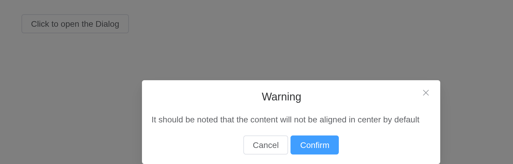
Tip
The content of Dialog is lazily rendered, which means the default slot is not rendered onto the DOM until it is firstly opened. Therefore, if you need to perform a DOM manipulation or access a component using
ref, do it in theopenevent callback.
Align Center dialog
Open dialog from the center of the screen.
Setting align-center to true will center
the dialog both horizontally and vertically. The prop top
will not work at the same time because the dialog is vertically centered
in a flexbox.
ui <- el_page(
el_button("open", "Click to open the Dialog", plain = TRUE),
el_dialog(
"warn",
title = "Warning",
width = "500px",
align_center = TRUE,
content = "Open the dialog from the center from the screen",
footer = tagList(
el_button("cancel", "Cancel"),
el_button("confirm", "Confirm", type = "primary")
)
)
)
server <- function(input, output, session) {
observeEvent(input$open, update_el_dialog(id = "warn", visible = TRUE))
}
shinyApp(ui, server)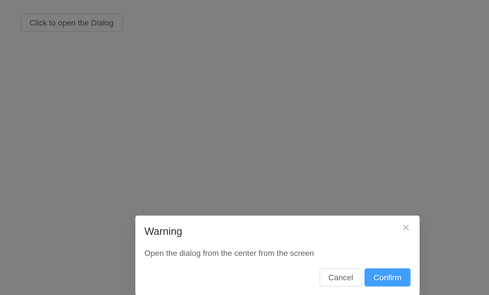
Destroy on Close
When this is feature is enabled, the content under default slot will
be destroyed with a v-if directive. Enable this when you
have perf concerns.
Note that by enabling this feature, the content will not be rendered
before transition.beforeEnter dispatched, there will only
be overlay header(if any)
footer(if any).
Its content made again each time it opens: inputs inside start fresh.
ui <- el_page(
el_button("open", "Click to open Dialog", plain = TRUE),
el_dialog(
"notice",
title = "Notice",
width = "500px",
destroy_on_close = TRUE,
center = TRUE,
content = tagList(
tags$p(
"Notice: before dialog gets opened for the first time this node and the one below will not be rendered"
),
el_input("note", placeholder = "starts empty each time")
)
)
)
server <- function(input, output, session) {
observeEvent(input$open, update_el_dialog(id = "notice", visible = TRUE))
}
shinyApp(ui, server)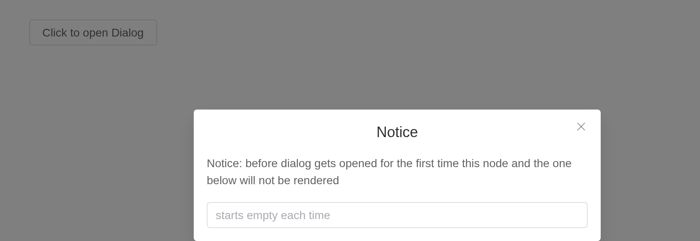
Draggable Dialog
Try to drag the header part.
Set draggable to true to drag. Set
overflow 2.5.4 to true can drag overflow the
viewport.
ui <- el_page(
el_button("open", "Click to open Dialog", plain = TRUE),
el_dialog(
"drag",
title = "Tips",
width = "500px",
draggable = TRUE,
content = "It's a draggable Dialog"
)
)
server <- function(input, output, session) {
observeEvent(input$open, update_el_dialog(id = "drag", visible = TRUE))
}
shinyApp(ui, server)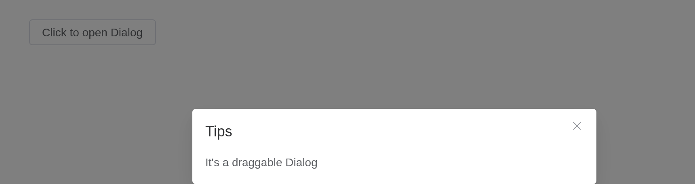
Tip
When using
modal= false, please make sure thatappend-to-bodywas set to true, becauseDialogwas positioned byposition: relative, whenmodalgets removed,Dialogwill position itself based on the current position in the DOM, instead ofDocument.Body, thus the style will be messed up.
Fullscreen
Set the fullscreen attribute to open fullscreen
dialog.
ui <- el_page(
el_button("open", "Open the fullscreen Dialog", plain = TRUE),
el_dialog(
"full",
title = "Tips",
fullscreen = TRUE,
content = "It's a fullscreen Dialog"
)
)
server <- function(input, output, session) {
observeEvent(input$open, update_el_dialog(id = "full", visible = TRUE))
}
shinyApp(ui, server)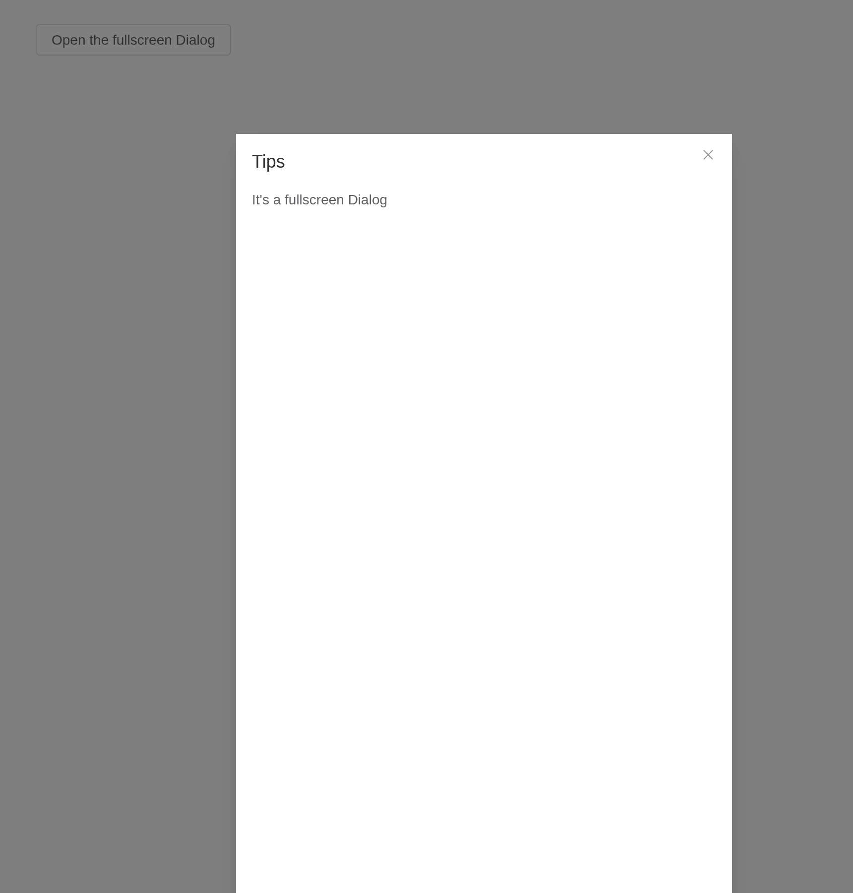
Tip
If
fullscreenis true,widthtopdraggableattributes don’t work.
Modal
Setting modal to false will hide modal
(overlay) of dialog.
Starting from version 2.10.5, modal-penetrable attribute
is added, which can be penetrable.
Without a backdrop the page beneath stays in view, and with
modal_penetrable it can be used too.
ui <- el_page(
el_button("open", "Open the modal-less Dialog", plain = TRUE),
el_dialog(
"nomodal",
title = "Tips",
width = "500px",
modal = FALSE,
modal_penetrable = TRUE,
content = "It's a modal-less Dialog"
)
)
server <- function(input, output, session) {
observeEvent(input$open, update_el_dialog(id = "nomodal", visible = TRUE))
}
shinyApp(ui, server)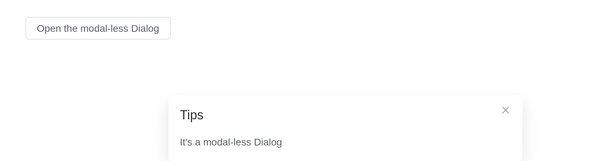
Custom Animation
Customize dialog animation through the transition
attribute, which accepts either:
Transition name (string)
Vue transition configuration (object)
Examples include scale, slide, fade, bounce animations and object-based configurations with custom event handlers.
transition names a CSS animation of your own, as Element
Plus’s does.
ui <- el_page(
tags$style(".dialog-bounce-enter-active { animation: dialog-fade-in .5s; }"),
el_button("open", "Open the Dialog", plain = TRUE),
el_dialog(
"anim",
title = "Custom animation",
width = "500px",
transition = "dialog-bounce",
content = "This dialog plays an animation of its own."
)
)
server <- function(input, output, session) {
observeEvent(input$open, update_el_dialog(id = "anim", visible = TRUE))
}
shinyApp(ui, server)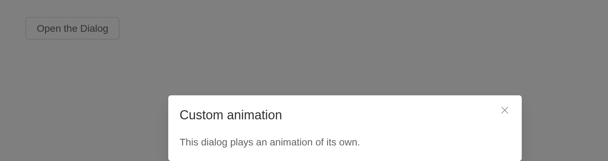
Tip
Animation classes are dynamically generated based on the transition name. For granular control over animation behavior, you may explicitly define these classes. Refer to custom-transition-classes for details.
Events
Open developer console (ctrl + shift + J), to see order of events.
input$<id>_closed is reported unasked;
_open, _opened, _close,
_open_auto_focus and _close_auto_focus when
asked for, with events.
ui <- el_page(
el_button("open", "Open the Dialog", plain = TRUE),
el_dialog(
"ev",
title = "Events",
width = "500px",
events = c("open", "opened", "close"),
content = verbatimTextOutput("log")
)
)
server <- function(input, output, session) {
seen <- reactiveVal(character())
for (e in c("open", "opened", "close", "closed")) {
local({
e <- e
observeEvent(input[[paste0("ev_", e)]], seen(c(seen(), e)))
})
}
output$log <- renderText(paste(seen(), collapse = "\n"))
observeEvent(input$open, update_el_dialog(id = "ev", visible = TRUE))
}
shinyApp(ui, server)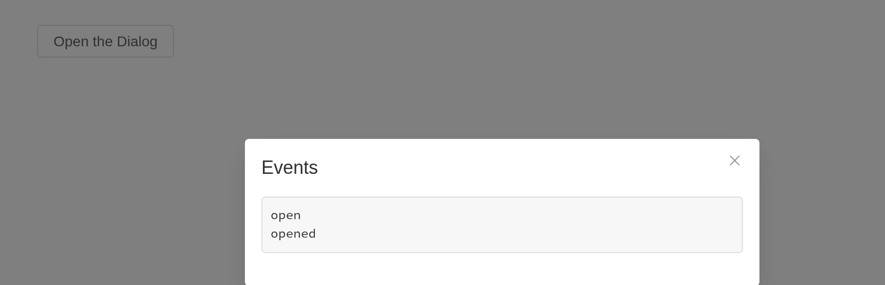
API
Element Plus’s tables, and beside each entry where it is in R.
Attributes
| Element | In R | Description | Type | Accepted | Default |
|---|---|---|---|---|---|
model-value |
visible; input$<id>
|
visibility of Dialog | 1 | false | |
title |
title |
title of Dialog. Can also be passed with a named slot (see the following table) | 2 | ’’ | |
width |
width |
width of Dialog, default is 50% | 3 / 4 | ’’ | |
fullscreen |
fullscreen |
whether the Dialog takes up full screen | 5 | false | |
top |
top |
value for margin-top of Dialog CSS, default is
15vh |
6 | ’’ | |
modal |
modal |
whether a mask is displayed | 7 | true | |
modal-penetrable |
modal_penetrable |
whether the mask is penetrable. The modal attribute must be
false. |
8 | false | |
modal-class |
modal_class |
custom class names for mask | 9 | — | |
header-class |
header_class |
custom class names for header wrapper | 10 | — | |
body-class |
body_class |
custom class names for body wrapper | 11 | — | |
footer-class |
footer_class |
custom class names for footer wrapper | 12 | — | |
append-to-body |
append_to_body |
whether to append Dialog itself to body. A nested Dialog should have
this attribute set to true
|
13 | false | |
append-to |
append_to |
which element the Dialog appends to. Will override
append-to-body
|
14 / 15 | body | |
lock-scroll |
lock_scroll |
whether scroll of body is disabled while Dialog is displayed | 16 | true | |
open-delay |
open_delay |
the Time(milliseconds) before open | 17 | 0 | |
close-delay |
close_delay |
the Time(milliseconds) before close | 18 | 0 | |
close-on-click-modal |
close_on_click_modal |
whether the Dialog can be closed by clicking the mask | 19 | true | |
close-on-press-escape |
close_on_press_escape |
whether the Dialog can be closed by pressing ESC | 20 | true | |
show-close |
show_close |
whether to show a close button | 21 | true | |
before-close |
before_close |
callback before Dialog closes, and it will prevent Dialog from closing, use done to close the dialog |
22(done: DoneFn) => void
|
— | |
draggable |
draggable |
enable dragging feature for Dialog | 23 | false | |
overflow |
overflow |
draggable Dialog can overflow the viewport | 24 | false | |
center |
center |
whether to align the header and footer in center | 25 | false | |
align-center |
align_center |
whether to align the dialog both horizontally and vertically | 26 | false | |
destroy-on-close |
destroy_on_close |
destroy elements in Dialog when closed | 27 | false | |
close-icon |
close_icon |
custom close icon, default is Close | 28 / 29 | — | |
z-index |
z_index |
same as z-index in native CSS, z-order of dialog | 30 | — | |
header-aria-level |
header_aria_level |
header’s aria-level attribute |
31 | 2 | |
transition |
transition |
custom transition configuration for dialog animation. Can be a string (transition name) or an object with Vue transition props |
32
/ 33TransitionProps
|
dialog-fade | |
custom-class |
custom_class |
custom class names for Dialog | 34 | ’’ |
Slots
| Element | In R | Description |
|---|---|---|
default |
default content | default content of Dialog |
header |
slots = list(header = ) |
content of the Dialog header; Replacing this removes the title, but does not remove the close button. |
footer |
slots = list(footer = ) |
content of the Dialog footer |
title |
slots = list(title = ) |
works the same as the header slot. Use that instead. |
Events
| Element | In R | Description |
|---|---|---|
open |
input$<id>_open, with
events = "open"
|
triggers when the Dialog opens |
opened |
input$<id>_opened, with
events = "opened"
|
triggers when the Dialog opening animation ends |
close |
input$<id>_close, with
events = "close"
|
triggers when the Dialog closes |
closed |
input$<id>_closed |
triggers when the Dialog closing animation ends |
open-auto-focus |
input$<id>_open_auto_focus, with
events = "open_auto_focus"
|
triggers after Dialog opens and content focused |
close-auto-focus |
input$<id>_close_auto_focus, with
events = "close_auto_focus"
|
triggers after Dialog closed and content focused |